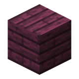

绯红木板绯红木窗户，下界紫红框，适合要塞与酒馆。
参数
材质绯红木
类型窗户（整块）
合成3 木板 + 1 玻璃 → 2
详细教程
怎么获得
用绯红木板三面包住一块玻璃，上方一块、下方左右各一块，一次合成 2 块窗户。绯红木来自下界的绯红森林，要在下界砍树才能拿到。
它的板色是暗紫红，几乎带一点血色调，是这一系列里最“重”的一款。
怎么用
它适合有压迫感的建筑：下界要塞、酒馆、吸血鬼宅邸、地牢入口。紫红框配暖色灯光，能把室内压成一种闷热的红，非常出效果。
主世界也能用，但最好只做局部——比如某间密室、某段塔楼，整栋都用会显得发黑。
搭配
配下界砖、黑石、深色橡木、绯红木窗户板是标准组合；灯光用灵魂火或红石灯，颜色才统一。
想更邪一点，就在窗框外再加一圈锈蚀的工业铁窗户，红与锈搭在一起很有废土感。
深红框配下界砖、黑石和灵魂火非常统一；放到主世界时，建议只做局部——比如一间炼金室的整面窗，别让整栋房子都变成下界色。
获取方式
被谁使用
被 1 个物品的 1 条配方用作材料。